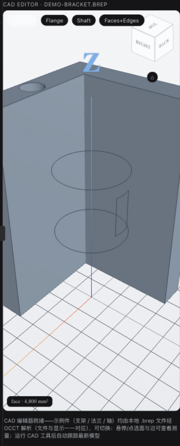

An embedded 3D/2D CAD viewer and a native parametric modeling tool family (OCCT kernel) for DeepSeek Harness — the agent builds exact BRep geometry step by step, live in the conversation.

# clone & build (Node ≥ 22) git clone https://github.com/LAU-MARS/dsh-cad.git cd dsh-cad && npm install && npm run build && npm test # register as a dsh web plugin npm i -g @deepseek-ai/dsh pnpm dsh plugin --profile web add /path/to/dsh-cad dsh web # then just ask: # "model a 100×70 L-bracket, two ⌀9 holes, # one ⌀12 mounting hole, fillet R2"
View, measure, model and export — every step stays exact BRep on the OCCT kernel, never a mesh approximation.
STL / OBJ / STEP / IGES / BREP / DCPRT — interactive orbit / zoom / wireframe cards right inside the chat.
Primitives, profile extrusion, booleans (fuse / cut / common), all-edge fillets and transforms — mm, Z-up, exact axis-angle placement.
A permanent tab beside the chat: XYZ axes + grid when empty, then tracking the latest model in real time as the agent works.
Worker meshes → in-memory binary → three.js typed arrays. No base64, no intermediate files, no per-step disk writes; documents persist and replay on restart.
DXF / SVG drawings render as crisp vector cards in the chat — resolution-independent lines in true drawing units.
cad_info reports DXF layer structure, entity counts and drawing metadata — read-only, without touching geometry.
Every 2D card shows exact drawing extents (e.g. 100 × 70 mm) with one-click Fit — verify scale at a glance.
Closed 2D profiles are first-class input to modeling: extrude any polygon sketch into an exact 3D solid along +Z.
git clone https://github.com/LAU-MARS/dsh-cad.git cd dsh-cad npm install && npm run build && npm test
npm i -g @deepseek-ai/dsh pnpm # Node ≥ 22 dsh web # init profile, Ctrl-C dsh plugin --profile web add /path/to/dsh-cad dsh web # set DEEPSEEK_API_KEY, then chat
Every modeling step refreshes the same viewer card in place — stable viewId, versioned URL — while the 3D tab keeps tracking.
cad_viewopen a CAD file, render an interactive cardcad_inforead-only geometry metadatacad_create_primbox / cylinder / sphere / cone / toruscad_extrude_profileclosed XY polygon → solid along +Zcad_booleanfuse / cut / commoncad_filletconstant-radius fillet on all sharp edgescad_transformtranslate / Euler rotate / mirrorcad_volumeexact BRep volume (mm³)cad_exportSTEP / STL / DCPRT (native part doc) to a workspace pathcad_deletedelete a bodycad_freecadrun ops on an external FreeCAD executor (STEP in/out)cad_image_profilePNG → contours → extrusion-ready polygongit clone https://github.com/LAU-MARS/dsh-cad.git cd dsh-cad npm install && npm run build && npm test
npm i -g @deepseek-ai/dsh pnpm # Node ≥ 22 dsh web # init profile, Ctrl-C dsh plugin --profile web add /path/to/dsh-cad dsh web # set DEEPSEEK_API_KEY, then chat